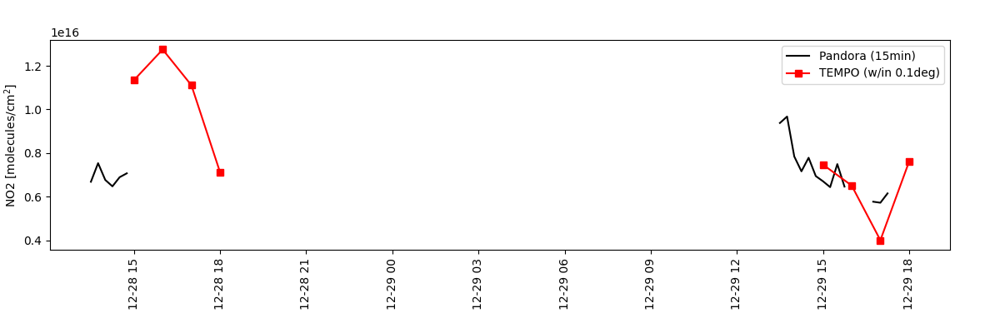

Note
Go to the end to download the full example code
Pittsburg Pandora vs TEMPO¶
Timeseries comparison of NO2 from the Pittsburg Pandora during unvalidated release 2023-12-17 to 2023-12-30.
import matplotlib.pyplot as plt
import pyrsig
import pandas as pd
import os
# Create an RSIG api isntance
# Define a Time and Space Scope during unvalidated release around Pittsburg Pandora
rsigapi = pyrsig.RsigApi(
bdate='2023-12-28T00', edate='2023-12-29T23:59:59',
bbox=(-80.0608, 40.3655, -79.8608, 40.5655), workdir='pitt'
)
# For the unvalidated data release, you do not need a key. To expand,
# outside the release, use a key.
# tkey = open(os.path.expandusrer('~/.tempokey'), 'r').read().strip()
api_key = 'none'
rsigapi.tempo_kw['api_key'] = api_key
# Get Pandora NO2 with dates parsed and units removed from column names
pandorakey = 'pandora.L2_rnvs3p1_8.nitrogen_dioxide_vertical_column_amount'
pandoracol = 'nitrogen_dioxide_vertical_column_amount'
padf = rsigapi.to_dataframe(
pandorakey, parse_dates=True, unit_keys=False, backend='xdr'
)
# Get TEMPO NO2
tempokey = 'tempo.l2.no2.vertical_column_troposphere'
tempocol = 'no2_vertical_column_troposphere'
tempodf = rsigapi.to_dataframe(
tempokey, unit_keys=False, parse_dates=True, backend='xdr'
)
# Create spatial medians for TEMPO and Pandora
gb = pd.Grouper(key='time', freq='1h')
tempods = tempodf.groupby(gb).median(numeric_only=True)[tempocol]
gb = pd.Grouper(key='time', freq='900s')
pads = padf.groupby(gb).median(numeric_only=True)[pandoracol]
# Create axes with shared x
gkw = dict(bottom=0.25, left=0.05, right=0.95)
fig, ax = plt.subplots(figsize=(12, 4), gridspec_kw=gkw)
ax.tick_params(axis='x', labelrotation=90)
# Add Pandora with markers at overpasses
ax.plot(pads.index.values, pads.values, color='k', label='Pandora (15min)')
# Add TEMPO NO2
ax.plot(tempods.index.values, tempods.values, marker='s', color='r', label='TEMPO (w/in 0.1deg)')
# Configure axes
ax.set(ylabel='NO2 [molecules/cm$^2$]')
ax.legend()
plt.show()
# Or save out figure
fig.savefig('pitt.png')
Total running time of the script: ( 0 minutes 4.069 seconds)